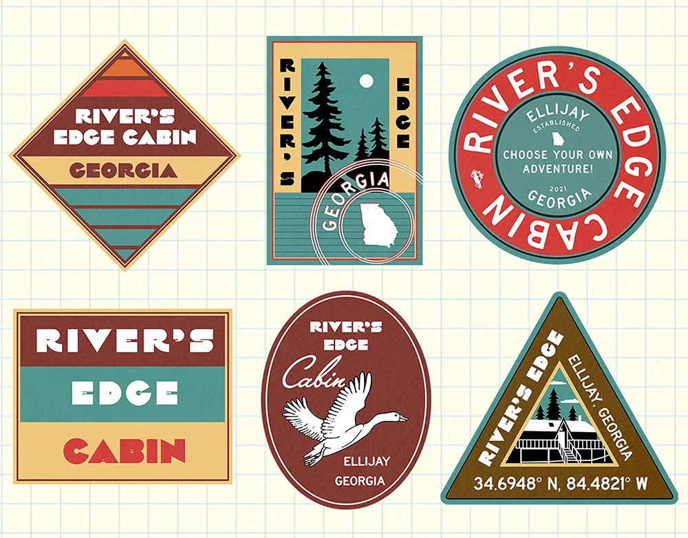

Graphic design · 2023
River’s Edge Cabin
A logo design, mini pamphlet, and set of stickers for River’s Edge Cabin, a charming Airbnb retreat located in Ellijay, Georgia.
Selected work
Disney Imagineering Finalist
Editorial graphics · NYT

Graphic design · 2023
A logo design, mini pamphlet, and set of stickers for River’s Edge Cabin, a charming Airbnb retreat located in Ellijay, Georgia.

Graphic design · In progress